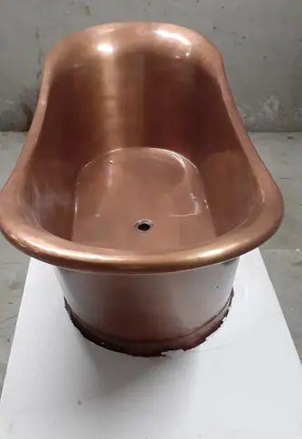
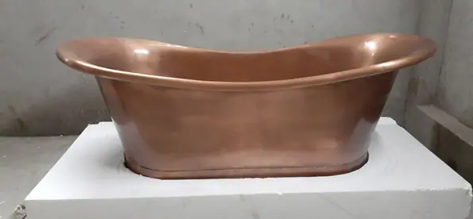
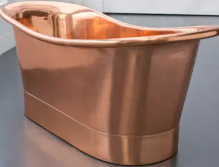

Free-standing baths are the ultimate way to express yourself while influencing the overall look and feel of a room.
They are practical, comfortable to use, simple to install and look amazing. No wonder they are so popular!
Our finishes in use


Created by hand
All copper bathtubs from Halman Thompson are created by hand and finished to your exact specifications. There’s nothing quite like it!
- Made with 16 gauge high-quality 99.97% cooper sheet
- Exterior & Interior Copper Polish finish
- Unique product completely handcrafted
Handmade Free-standing Copper Bathtubs
Copper bathtubs are currently available in two distinct finishes, aged copper or polished copper .
Both showcase the beautiful colour and patina of copper in slightly different ways.
Both deliver a touch of elegance without being over the top and can be used as a centrepiece of a design or fit comfortably within a room.
Free-standing bathtubs have been popular since the 19 th century. As they were usually the preserve of the wealthy, they gained a reputation for luxury, something that remains 200 years later.
One of the many reasons free-standing bathtubs are used so often in interior design!
You can find them in upmarket hotels, penthouses and renovated homes and on interior design shows. Wherever a homeowner wants to express their style and substance, you’ll usually find a free-standing bath.
Combine them with a tiled surround or prepared plinth and set the copper off with complementing or contrasting colours or textures. It’s a very effective way to lift a room.
Contact Halman Thompson for a free, no-obligation quote for your handmade copper bathtub!

Ready to go
Once you select your finish our team will work with you throughout the process to produce the perfect bathtub.
Please use the Request a Quote form below
Bespoke Copper Bathtubs
Copper bathtubs from Halman Thompson are all handmade.
Each free-standing copper bathtub is made from 16-gauge 99.97% copper.
The tub will be a standard size, 1700mm x 710mm x 710mm with a drain hole in the centre of the tub.
Polished copper bathtubs are provided with a high polish that should last a lifetime. The tub can easily be cleaned and polished at home to maintain the look.
Caring for Your Handmade Copper Bathtub
Caring for your copper bathtub is incredibly straightforward. One of the great things about copper is that it’s very low maintenance.
Copper bathtubs can easily cope with everyday use and still look amazing. Some simple regular care and your bath could still be looking this good in another 200 years’ time.
Clean it with warm soapy water, avoid using abrasive cleaners and it should last a lifetime.
We provide full care instructions with every copper bathtub, just in case.
Contact Halman Thompson for a free, bespoke copper bathtub quotation or request a quote at the bottom of the page!


If you can dream it, we’ll make it.
Bars, balustrades, staircases, worktops, cladding and pieces that don’t have a name yet. Our designers and craftspeople work in brass, copper, zinc and steel, and alongside wood.